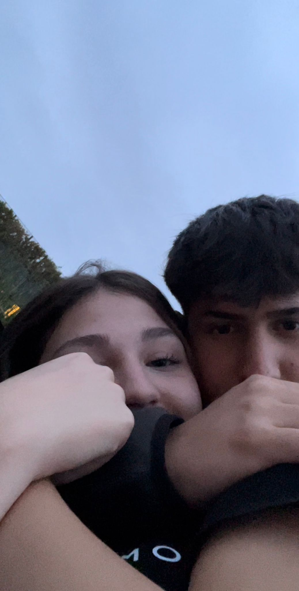
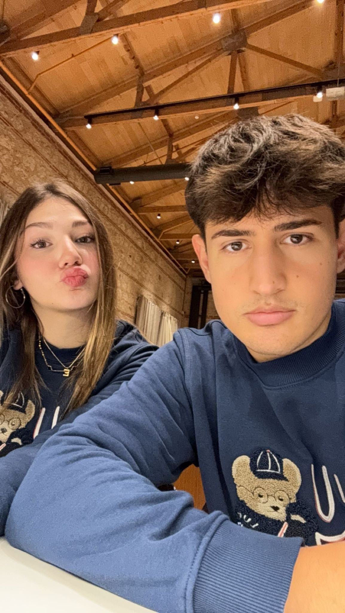
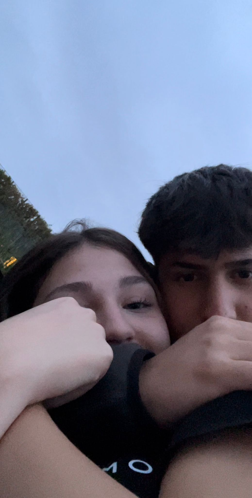
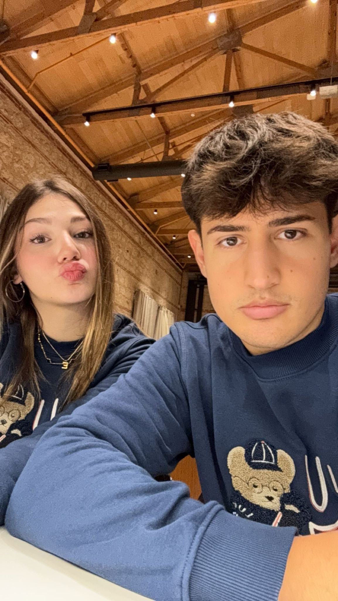

Sevgilimmm,
Hayatımın en güzel AŞK hikayesi sensin. Kalbimin en özel köşesinde hep sen varsın. Bu sayfa seni mutlu etmek için, çünkü sen her şeyin en iyisini hak ediyorsun! Seni seviyorum...❤️
Hayatımın en güzel AŞK hikayesi sensin. Kalbimin en özel köşesinde hep sen varsın. Bu sayfa seni mutlu etmek için, çünkü sen her şeyin en iyisini hak ediyorsun! Seni seviyorum...❤️
 


